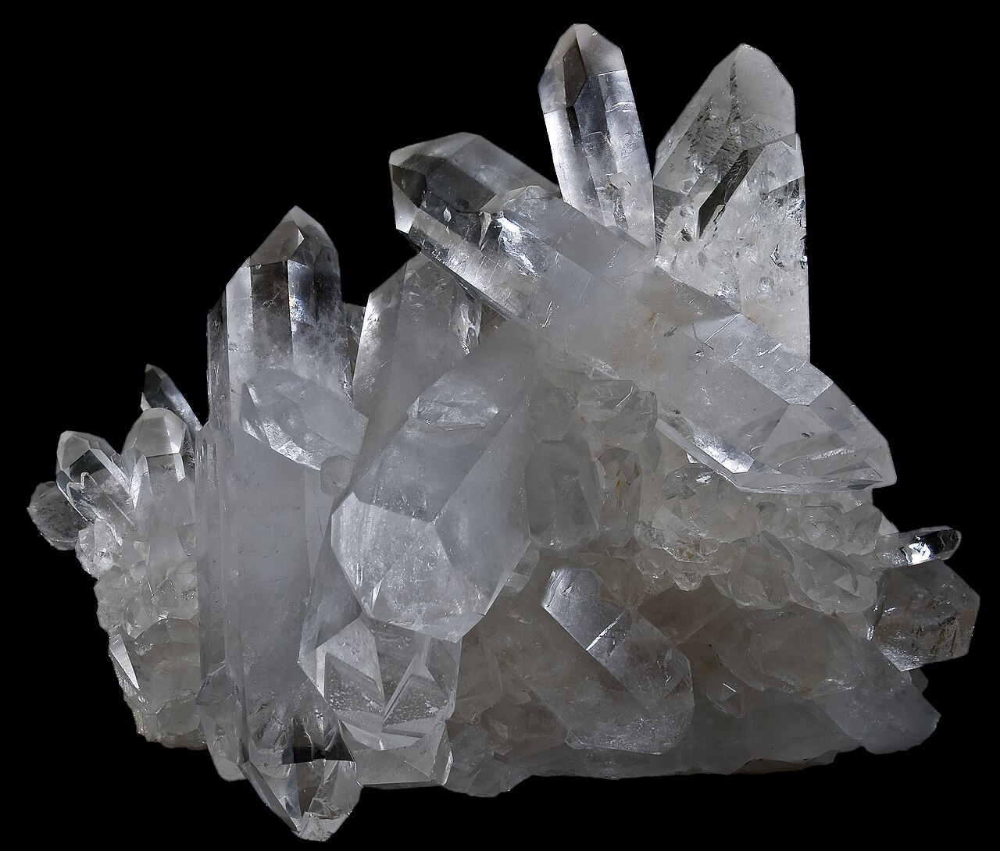

The Missing Mechanism
The construction achievements of ancient megalithic cultures present a persistent puzzle in archaeology and engineering. Conventional accounts—hammerstone dressing, copper-tube abrasive drilling, and lever-assisted placement—are empirically supported but leave residual anomalies unexplained.
The Resonance Architecture hypothesis proposes that a family of vibration-mediated physical effects constitutes a coherent technological toolkit that explains these residuals. It requires only that controlled vibration was applied to stone at relevant scales.
Image via Wikimedia Commons
The Anomaly Set
Logistical Transport
Moving blocks of 10–200 tonnes requires immense energy. Conventional sledges face high kinetic friction; organized vibration of the interface could theoretically reduce required traction by over 50%.
Anomalous Drill Cores
Petrie's granite drill core No. 7 from Giza displays a helical groove implying an anomalously high feed rate of ~2.5mm per revolution, unachieved by simple copper tube and emery drilling.
Polygonal Precision
Inca masonry at Sacsayhuamán achieves sub-millimeter gaps across irregular, multi-meter interfaces. How were these curved interfaces converged without systemic surface-profile feedback?
Systematic Boss Placement
Egyptian ashlars bear standardized protrusions ("bosses"). While often cited as lever interfaces, their geometries may instead predict transducer contact points for vibration-coupling.
Acoustic Enclosures
Many megalithic structures exhibit strong resonant frequencies (90–130 Hz). The King's Chamber resonates near 49.5 Hz. Are these properties incidental, or evidence of deliberate acoustic engineering?
Physical Foundations
The framework draws on four distinct bodies of well-established physics.
Vibration-Controlled Friction Modulation
When an oscillatory velocity component is superimposed on a sliding contact, the effective friction coefficient drops. In the "ultrasonic lubrication" regime, kinetic friction can be reduced by up to 89%.
Relevance: For a 100-tonne block, this could reduce the required horizontal traction force from ~440 kN to 50–180 kN.
Image via Wikimedia Commons
Piezoelectric Excitation of Quartz-Bearing Rock
Granites typically contain 20–40% quartz, making the bulk rock macroscopically piezoelectric. When an alternating electric field is applied near the natural resonance frequency, it reduces Vickers hardness by ~25% and dynamic tensile strength by ~18%.
Relevance: A reduction in hardness translates directly to a higher material removal rate under abrasive contact.

Image via Wikimedia Commons
Ultrasonic Abrasive Machining
Rotary Ultrasonic Machining (RUM) superimposes axial ultrasonic vibration onto a rotating tool. In hard rock like basalt, penetration rates are approximately 3x those of percussive drilling.
Relevance: Combined with piezoelectric weakening, this explains Petrie's anomalous drill-core feed rates.
[Drill Core Image Placeholder]
Tribological Self-Organization
Tribological systems driven far from equilibrium develop decreasing wear states. Vibration-assisted lapping accelerates convergence to a conforming surface state by increasing abrasive grain mobility.
Relevance: This provides a physically principled path to tight-fitting polygonal joints without manual measurement at every step.
Image via Wikimedia Commons
The Validation Programme
The framework stands or falls on experimental evidence. We have derived six specific, falsifiable predictions that are testable with currently available instrumentation, forming a 24-month validation program.
- P1: Friction reduction in stone-relevant tribopairs under ultrasonic oscillation.
- P2: Hardness reduction replication across Aswan granite.
- P3: Groove signature matching on Petrie core No. 7 revealing depth modulation.
- P4: Surface microtopography scans of Sacsayhuamán showing isotropic lapped texture.
- P5: Boss placement correlating with nodal/antinodal positions in modal analysis.
- P6: Correlated acoustic resonance and construction precision across diverse sites.
Read the Framework
The full Resonance Architecture paper by Justin Bogner contains complete citations, physical derivations, and the structured validation roadmap.
Download PDF